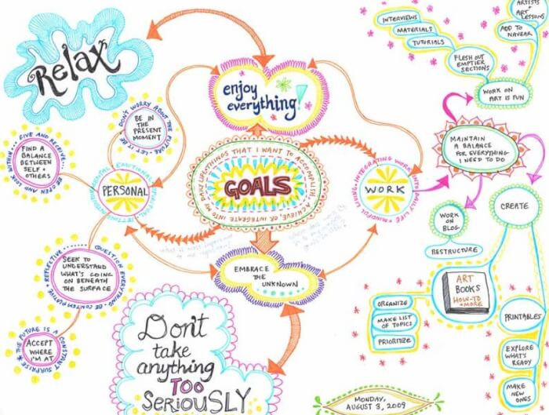

 Sebagian besar penyebab kegagalan yang terjadi baik pada skala pribadi ataupun klasifikasi diakibatkan oleh kegagalan dalam memutuskan visi. Malahan sebagian besarnya berprofesi tanpa mempunyai sebuah visi yang jelas. Sebaliknya, visi yang terang ialah sebuah langkah awal menuju kesuksesan.
Dengan visi yang terang seseorang akan mengetahui kemana dia akan melangkah, apa yang seharusnya dijalankannya, keputusan apa yang semestinya diambil, siapa saja orang yang bisa diajak bersinergi untuk mencapai tujuan hal yang demikian, dan kekurangan-kekurangan apa saja yang seharusnya dipenuhi agar tujuan tersebut bisa langsung terwujud. Oleh karenanya sering sekali kita mengamati banyak orang yang terjebak ke dalam rutinitas kerja, tetapi mereka sendiri tak mengenal apa yang bisa mereka peroleh di masa yang akan datang dan apa yang semestinya mereka lakukan untuk membikin kehidupannya berubah menjadi lebih bagus, mereka itulah orang yang tak mempunyai tujuan dan visi dalam hidupnya.
Berbeda dengan orang-orang yang memiliki sebuah visi yang jelas, tiap-tiap hari yang mereka jalani adalah komponen dari langkah mereka menuju impiannya, tiap-tiap profesi yang mereka jalani yaitu level-jenjang yang sepatutnya mereka lalui sampai mimpinya terwujud, dan tiap waktu yang sudah mereka lalui akan kian mendekatkan mereka dengan impiannya hal yang demikian.
Masalahnya bukanlah seberapa kencang engkau berlari. Engkau tak akan pernah meraih tujuanmu seandainya engkau tidak tahu apa tujuanmu itu (Faiez seyal). Seseorang tak akan pernah menjadi apa-apa selama ia sendiri tak mengenal apa sesungguhnya yang diharapkan dalam hidup. Bagaimana mungkin seseorang bisa meraih sesuatu, sementara ia sendiri tak mengetahui apa yang wajib diraihnya hal yang demikian. Ibaratnya, seorang pelari marathon yang berlari pesat dengan stamina yang kuat tapi tak mengenal letak garis finish, karenanya pelari hal yang demikian tidak akan pernah menjadi seorang juara. Demikian pula seorang yang sudah berprofesi betul-betul keras melainkan tidak memiliki cita-cita, visi maupun tujuan dalam kehidupannya. Sehebat apa saja orang hal yang demikian, sebesar apapun potensinya, ia tak akan pernah jadi siapa – siapa selama tak mempunyai tujuan hidup. Dan potensi besar yang dimilikinya tadi akan terbuang percuma sebab tak terarah secara konsentrasi.